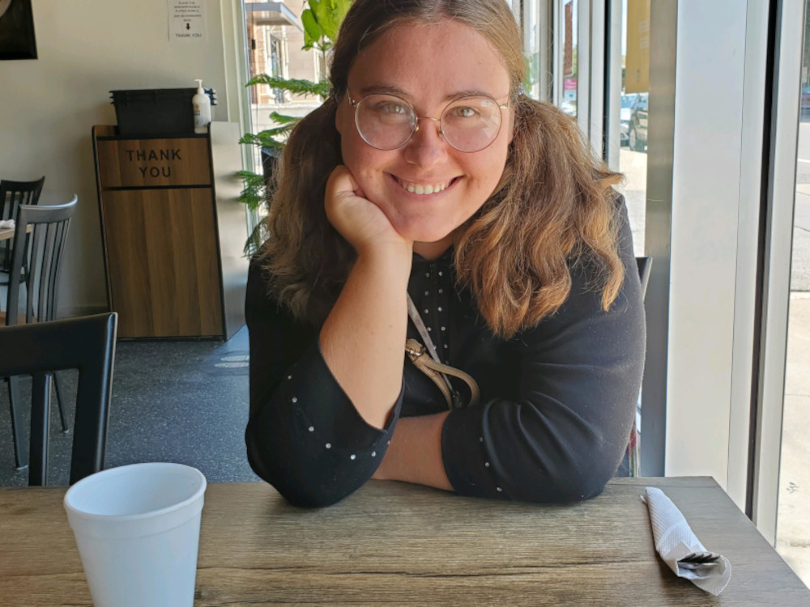

About Me
I am a Communication grad student and GTA at Wichita State University with a passion for writing and a professional background in journalism and communications. My poems are a bit unconventional for literary magazines, so I made this website to share them with the world.
